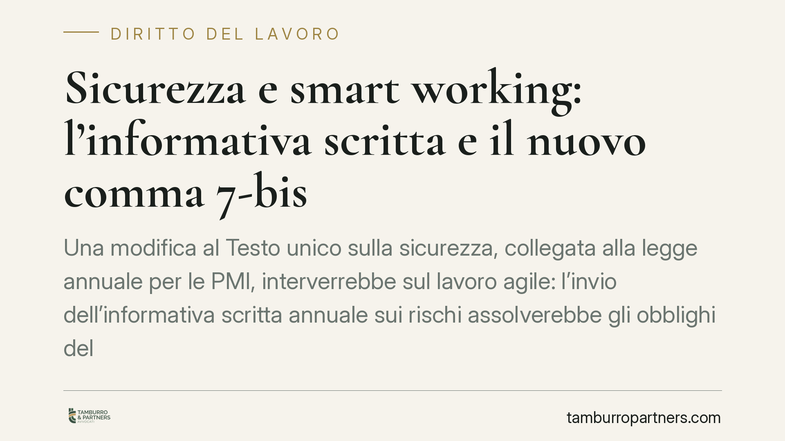

Sicurezza e smart working: l'informativa scritta e il nuovo comma 7-bis
Una modifica al Testo unico sulla sicurezza, collegata alla legge annuale per le PMI, interverrebbe sul lavoro agile: l'invio dell'informativa scritta annuale sui rischi assolverebbe gli obblighi del datore, anche per i videoterminali. Una semplificazione per le imprese, ma che non cancella il dovere generale di tutela. Vediamo cosa cambia e con quali cautele leggere il testo.

Il quadro: cosa prevede la riforma
Il tema nasce da un intervento annunciato nell'ambito della cosiddetta legge annuale per le PMI. L'obiettivo dichiarato è alleggerire gli adempimenti in materia di sicurezza per il lavoro agile (smart working).
In sintesi, la novità introdurrebbe un nuovo comma 7-bis all'articolo 3 del D.lgs. 81/2008 (Testo unico sulla sicurezza sul lavoro), stabilendo che, per i lavoratori in modalità agile, l'invio dell'informativa scritta con cadenza almeno annuale sui rischi assolve gli obblighi di sicurezza a carico del datore di lavoro, compresi quelli relativi all'uso dei videoterminali.
### Una precisazione necessaria sul testo
Alla data di stesura di questo contributo, gli estremi definitivi del provvedimento (numero e anno di pubblicazione in Gazzetta Ufficiale) non risultano consolidati. Trattiamo quindi la misura come disposizione in fase di definizione: la collocazione esatta al comma 7-bis dell'art. 3 e la formulazione finale vanno verificate sul testo effettivamente pubblicato.
Inquadramento normativo
Il lavoro agile è regolato dalla Legge 81/2017. In particolare, l'articolo 22, comma 1, pone a carico del datore l'obbligo di consegnare al lavoratore e al rappresentante dei lavoratori per la sicurezza (RLS), con cadenza almeno annuale, un'informativa scritta che individua i rischi generali e specifici connessi alla modalità di lavoro agile.
La riforma collegata alla legge annuale PMI si innesterebbe proprio su questo impianto, chiarendo che tale informativa — già prevista dall'art. 22 L. 81/2017 — vale come assolvimento degli obblighi di sicurezza anche ai fini del Testo unico. Si tratterebbe quindi di un coordinamento tra due corpi normativi, più che di una creazione di adempimenti nuovi.
> Nota di trasparenza: il collegamento tra l'informativa dell'art. 22 L. 81/2017 e il nuovo comma 7-bis dell'art. 3 Dlgs 81/2008 è l'interpretazione più coerente del testo annunciato, ma va confermata sulla versione definitiva. Invitiamo a non assumere come acquisito quanto non ancora pubblicato.
Semplificazione non significa esonero
Il punto più delicato riguarda la portata effettiva della misura. Dire che l'informativa "assolve gli obblighi di sicurezza" non equivale a dire che il datore è esonerato da ogni responsabilità.
Resta infatti pienamente operativo l'articolo 2087 del Codice civile, che impone all'imprenditore di adottare tutte le misure necessarie a tutelare l'integrità fisica e la personalità morale dei lavoratori. È una norma generale e inderogabile: nessuna semplificazione documentale può neutralizzarla.
In concreto, se l'informativa fosse generica, non aggiornata o palesemente inadeguata rispetto ai rischi reali della postazione domestica, il datore resterebbe esposto. La semplificazione riguarda la forma dell'adempimento, non la sostanza della tutela.
Il ruolo dell'RLS
La riforma non incide sulle prerogative del rappresentante dei lavoratori per la sicurezza. L'informativa va trasmessa anche all'RLS, che conserva i poteri di consultazione e verifica previsti dal Testo unico. Un confronto preventivo con l'RLS resta buona prassi, soprattutto nelle realtà che adottano lo smart working in modo strutturale.
Implicazioni pratiche per le PMI
Per le piccole e medie imprese la misura, se confermata, riduce il peso degli adempimenti formali legati allo smart working. Il baricentro si sposta sulla qualità dell'informativa annuale, che diventa il documento centrale di gestione del rischio nel lavoro agile.
Questo comporta un'attenzione maggiore alla redazione del documento: non un modulo standard, ma uno strumento calibrato sull'attività svolta e sull'uso dei videoterminali.
Cosa fare in concreto
- Verificate il testo definitivo del provvedimento prima di modificare le vostre procedure: finché non è pubblicato in Gazzetta Ufficiale, mantenete gli adempimenti attuali.
- Aggiornate l'informativa annuale rendendola specifica: indicate i rischi connessi alla postazione, all'uso dei videoterminali e all'organizzazione del lavoro agile.
- Trasmettete l'informativa all'RLS oltre che ai lavoratori, documentando data e modalità di invio.
- Conservate prova dell'adempimento (ricevute, PEC, accettazioni): in caso di contestazione, la tracciabilità è decisiva.
- Non trascurate l'art. 2087 c.c.: valutate periodicamente l'adeguatezza concreta delle misure, al di là del documento formale.
Note di trasparenza
La materia è in evoluzione. Le indicazioni di questo contributo si basano su una misura annunciata ma non ancora stabilizzata nei suoi estremi. Consigliamo di rileggere le proprie procedure una volta pubblicato il testo definitivo.
---
*Contributo informativo a cura di Tamburro & Partners - Avv. Giuseppe Tamburro. Non costituisce parere legale.*
Ogni storia di lavoro ha i suoi tempi.
Se gestisci HR e vuoi un confronto su contenzioso, ispezioni o licenziamenti, scrivi allo studio. Ti rispondiamo entro un giorno lavorativo.